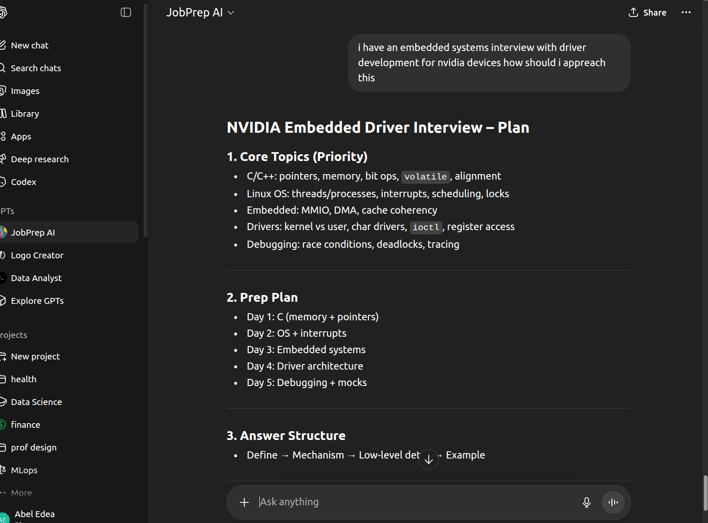

JobPrep AI is an interview preparation tool designed to help users practice for technical and behavioral interviews. It generates structured guidance, sample questions, and targeted preparation support based on the user’s needs.
Interface Preview

Sample Input and Output
This project shows how AI can be used to create practical tools that support users in a real task. Instead of only explaining concepts, it demonstrates an application that helps people prepare for interviews in a more guided and interactive way.